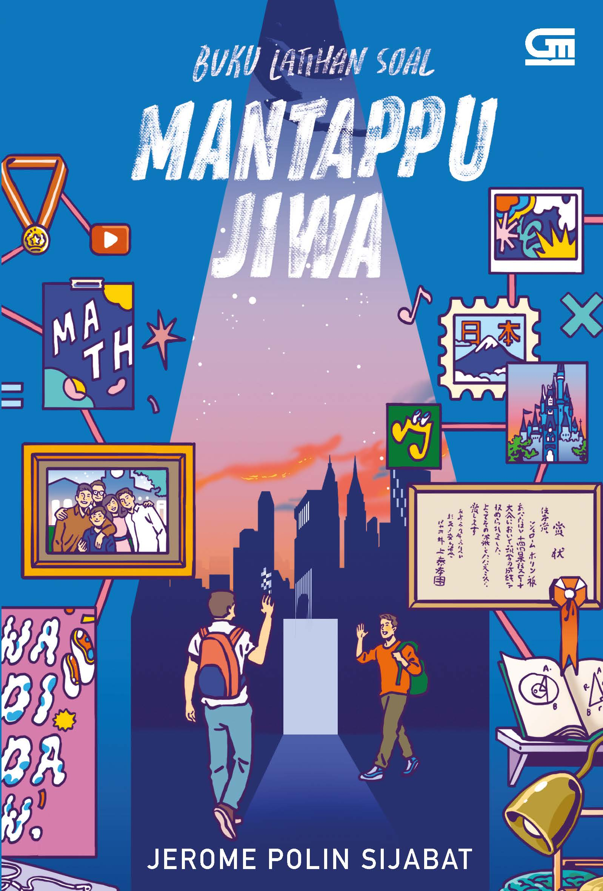
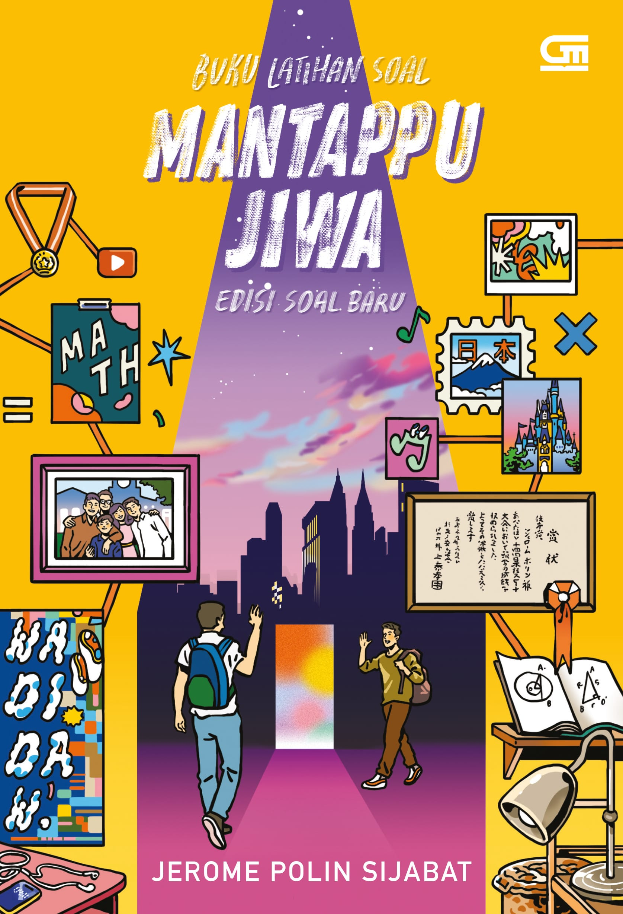

"jerome polin "
mantappu jiwa
|
Document
|
Instagram
YouTube
Official Website
|
Profil
bisnis
prestasi
buku
|
Jerome Polin Sijabat adalah seorang YouTuber, selebritas internet, pengusaha, dan kreator konten asal Indonesia yang
dikenal luas melalui kanal YouTube Nihongo Mantappu. Ia populer karena kontennya yang edukatif, menghibur, dan sering
kali membahas matematika serta kehidupan kuliahnya saat di Jepang
bisnis
Daftar Bisnis Jerome Polin
jerome polin bersama kakaknya, Jehian Panangian Sijabat, mengelola beberapa lini usaha di bidang manajemen talenta, pendidikan, hingga olahraga:
- 🏢 Mantappu Corp
Sektor: Manajemen talenta (talent management) & agensi kreator
Detail: Didirikan sejak 2018, menaungi berbagai kreator konten dan influencer terkenal.
- 📚 Mantappu Academy
Sektor: Pendidikan / Bimbingan belajar.
Detail: Pusat bimbingan belajar yang berfokus pada pelajaran matematika dan pengembangan kemampuan akademik.
- 🎾 Beyond Padel
Sektor: Olahraga & Rekreasi.
Detail: Bisnis penyediaan fasilitas dan lapangan olahraga padel yang dikembangkan melalui investasi perusahaan.
prestasi
Mendapatkan beasiswa penuh Mitsui Bussan Scholarship untuk kuliah di Jepang.
- Lulus dari Waseda University jurusan Matematika Terapan.
- Juara 1 Industrial Engineering Games ITS (2016).
- Juara 1 Olimpiade Matematika Nasional (Universitas Negeri Malang).
- Juara 1 International Kangaroo Math Competition.
- Juara 3 Olimpiade Matematika Nasional (Universitas Brawijaya).
- Juara 3 Olimpiade Teknik Kimia Nasional (Universitas Widya Mandala)
buku jerome polin
-
Buku Latihan Soal Mantappu Jiwa (2019)
Berisi autobiografi perjalanan hidup Jerome Polin sejak kecil,
masa sekolah, hingga perjuangannya mendapatkan beasiswa penuh Mitsui Bussan di Waseda
University, Jepang, jurusan Matematika Terapan

-
Buku Latihan Soal Mantappu Jiwa (2020 / Edisi Terbaru 2023)
Mantappu Jiwa yang berisi cerita-cerita tambahan serta kumpulan latihan
soal (termasuk matematika dan logika) yang dikemas secara interaktif dan edukatif.

|
|
© Renata Akwilia Simanjuntak- Teknologi Informasi USU
|